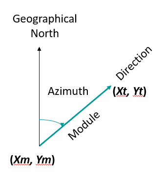

Question 1 Question 1 If you calculate a stream line with the same DEM, all flow direction calculation algorithms return the same results. True False Feedback False
Question 2 Question 1 D8 is a one-dimensional flow where directions are restricted to multiple angles of 45°. True False Feedback True
Question 3 Question The steps for generation stream network automatically are: (multiple correct answers) Answers Option 1 DEM preprocessing. Option 2 Flow direction. Option 3 Photogrammetric delineation. Option 4 Flow accumulation. Option 5 Stream line extraction. Feedback Solution Correct Correct Incorrect Correct Correct
Question 4 Question We have a set of circular data (for example, wind directions) and we want to summarize the information with a measure of central tendency and a measure of dispersion of the data. Choose the correct answer. Answers Option 1 Arithmetic mean and circular standard deviation. Option 2 Mean azimuth and circular standard deviation. Option 3 Arithmetic mean and standard deviation Option 4 All of them Feedback Wrong Correct Option Wrong Wrong Solution Wrong (Feedback) Correct Option (Feedback) Wrong (Feedback) Wrong (Feedback)
Question 5 Question The origin in circular data for spatial data can be: (multiple correct answers) Answers Option 1 The North Option 2 The X-Axis Option 3 An arbitrary point Feedback Solution Correct Correct Correct
Question 6 Question 1 In a uniform distribution, the value of the circular dispersal is infinite. True False Feedback True
Question 7 Question 1 In a uniform distribution, the value of the mean azimuth is infinite. True False Feedback False
Question 8 Question Which of the following phrases best defines circular data? Answers Option 1 Any data that can be measured and converted o degrees, radians, clock o calendar. Option 2 Any data that can be measured with a compass. Option 3 Any data that can be represented in the real line. Option 4 Any data that can be measured with a clock. Feedback Correct Option Wrong Wrong Wrong Solution Correct Option (Feedback) Wrong (Feedback) Wrong (Feedback) Wrong (Feedback)
Question 9 Question Considering cartographic error, the most comprehensive way to analyze positional errors is: Answers Option 1 Better to ignore them. Option 2 Taking into account the vector nature of the error. Option 3 Calculating the RMSE. Option 4 Taking into account only the largest. Feedback Wrong Correct Option Wrong Wrong Solution Wrong (Feedback) Correct Option (Feedback) Wrong (Feedback) Wrong (Feedback)
Question 10 Question 1 The vector of the positional error is generated from a pair of Cartesian coordinates: the initial node in the measured position (Xm, Ym) and the end node in the true position (Xt, Yt).  True False Feedback True